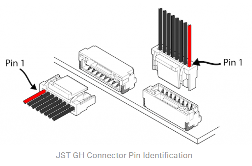
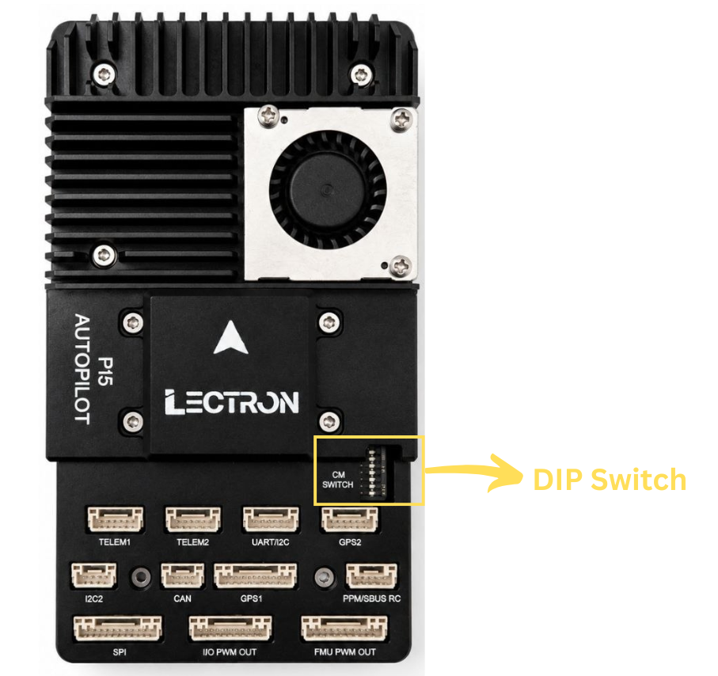

Connections & Ports¶
This page describes every external connector on the Lectron CM5 Autopilot baseboard, including its connector type, pin assignment, signal name and operating voltage.
The board is organized into two functional domains:
- Pixhawk FMU side — the flight-controller connectors that follow the Pixhawk Bus Standard (CAN, SBUS, telemetry, GPS, PWM, debug, etc.).
- CM5 compute side — the Raspberry Pi Compute Module 5 connectors (GPIO/SPI/PWM, UART, I2C, camera FPC, CAN, USB, etc.).
Voltage Legend
All logic signals are +3.3V unless noted otherwise.
| Symbol | Meaning |
|---|---|
+5V |
Peripheral / system 5V rail |
+3.3V |
Logic-level signal (3.3V) |
+12/28V |
Main power input range |
0-16V |
Servo rail sense (depends on BEC) |
GND |
Ground |
--- |
Not connected / no defined level |
Warning
Most logic pins are 3.3V tolerant only. Do not apply 5V logic levels to signal pins, and never source servo/motor power from the peripheral 5V rail.
Power Budget
The peripheral 5V rail is shared across all connectors on each side. The total current drawn from all FMU ports combined must not exceed 1.5 A. The same 1.5 A total limit applies to all CM5 ports combined. Budget the current across connected peripherals accordingly.
Pin 1 Identification¶
In every pinout table below, Pin 1 is the first row. Use the image below to locate Pin 1 on the physical JST GH connector before wiring.

Pixhawk FMU Connectors¶
Pixhawk CAN¶
Primary CAN bus for the flight controller (Pixhawk Bus Standard).
| Connector | Pin | Signal | Voltage |
|---|---|---|---|
| BM04B-GHS | 1 | PERIPHERAL 5V | +5V |
| 2 | CAN HIGH | +3.3V | |
| 3 | CAN LOW | +3.3V | |
| 4 | GROUND | GND |
Pixhawk SBUS¶
RC receiver input (PPM/SBUS) with RSSI feedback.
| Connector | Pin | Signal | Voltage |
|---|---|---|---|
| BM05B-GHS | 1 | PERIPHERAL 5V | +5V |
| 2 | PPM / SBUS INPUT | +3.3V | |
| 3 | NC | --- | |
| 4 | RSSI IN / SBUS OUT | +3.3V | |
| 5 | GROUND | GND |
DSM Support
The Lectron Autopilot product doesn't support DSM.
Pixhawk I2C3 / UART4¶
Combined serial + I2C peripheral port.
| Connector | Pin | Signal | Voltage |
|---|---|---|---|
| BM06B-GHS | 1 | PERIPHERAL 5V | +5V |
| 2 | UART4 TX | +3.3V | |
| 3 | UART4 RX | +3.3V | |
| 4 | I2C3 SCL | +3.3V | |
| 5 | I2C3 SDA | +3.3V | |
| 6 | GROUND | GND |
Pixhawk SPI6¶
External high-speed SPI bus with two chip-selects and two data-ready lines.
| Connector | Pin | Signal | Voltage |
|---|---|---|---|
| BM11B-GHS | 1 | PERIPHERAL 5V | +5V |
| 2 | SPI6 SCK | +3.3V | |
| 3 | SPI6 MISO (RX) | +3.3V | |
| 4 | SPI6 MOSI (TX) | +3.3V | |
| 5 | SPI6 NCS-1 | +3.3V | |
| 6 | SPI6 NCS-2 | +3.3V | |
| 7 | SPIX SYNC | +3.3V | |
| 8 | SPI6 DRDY-1 | +3.3V | |
| 9 | SPI6 DRDY-2 | +3.3V | |
| 10 | SPI6 NRST | +3.3V | |
| 11 | GROUND | GND |
Pixhawk IO PWM (MAIN)¶
Main PWM outputs driven by the IO co-processor.
| Connector | Pin | Signal | Voltage |
|---|---|---|---|
| BM10B-GHS | 1 | VDD SERVO SENS | 0-16V |
| 2 | IO PWM CH1 | +3.3V | |
| 3 | IO PWM CH2 | +3.3V | |
| 4 | IO PWM CH3 | +3.3V | |
| 5 | IO PWM CH4 | +3.3V | |
| 6 | IO PWM CH5 | +3.3V | |
| 7 | IO PWM CH6 | +3.3V | |
| 8 | IO PWM CH7 | +3.3V | |
| 9 | IO PWM CH8 | +3.3V | |
| 10 | GROUND | GND |
Pixhawk FMU PWM (AUX)¶
Auxiliary PWM outputs driven directly by the FMU.
| Connector | Pin | Signal | Voltage |
|---|---|---|---|
| BM10B-GHS | 1 | VDD SERVO SENS | 0-16V |
| 2 | FMU PWM CH1 | +3.3V | |
| 3 | FMU PWM CH2 | +3.3V | |
| 4 | FMU PWM CH3 | +3.3V | |
| 5 | FMU PWM CH4 | +3.3V | |
| 6 | FMU PWM CH5 | +3.3V | |
| 7 | FMU PWM CH6 | +3.3V | |
| 8 | FMU PWM CH7 | +3.3V | |
| 9 | FMU PWM CH8 | +3.3V | |
| 10 | GROUND | GND |
Pixhawk FMU Debug¶
SWD + serial debug for the FMU processor.
| Connector | Pin | Signal | Voltage |
|---|---|---|---|
| SM10B-SRSS | 1 | FMU VDD 3.3V | +3.3V |
| 2 | USART3_TX_DEBUG | +3.3V | |
| 3 | USART3_RX_DEBUG | +3.3V | |
| 4 | FMU_SWDIO | +3.3V | |
| 5 | FMU_SWCLK | +3.3V | |
| 6 | SPI6_SCK_EXTERNAL1 | +3.3V | |
| 7 | NFC_GPIO | +3.3V | |
| 8 | PH11 | +3.3V | |
| 9 | FMU_NRST | +3.3V | |
| 10 | GROUND | GND |
Pixhawk IO Debug¶
SWD + serial debug for the IO co-processor.
| Connector | Pin | Signal | Voltage |
|---|---|---|---|
| SM10B-SRSS | 1 | IO VDD 3.3V | +3.3V |
| 2 | IO_USART1_TX_DEBUG | +3.3V | |
| 3 | NC | --- | |
| 4 | IO_SWDIO | +3.3V | |
| 5 | IO_SWCLK | +3.3V | |
| 6 | IO_SWO | +3.3V | |
| 7 | IO_SPARE_GPIO1 | +3.3V | |
| 8 | IO_SPARE_GPIO2 | +3.3V | |
| 9 | IO_NRST | +3.3V | |
| 10 | GROUND | GND |
PX I2C2¶
Secondary I2C peripheral bus.
| Connector | Pin | Signal | Voltage |
|---|---|---|---|
| BM04B-GHS | 1 | PERIPHERAL 5V | +5V |
| 2 | I2C2 SCL | +3.3V | |
| 3 | I2C2 SDA | +3.3V | |
| 4 | GROUND | GND |
Pixhawk Telemetry 1¶
Primary telemetry serial port with flow control (UART7).
| Connector | Pin | Signal | Voltage |
|---|---|---|---|
| BM06B-GHS | 1 | PERIPHERAL 5V | +5V |
| 2 | UART7 TX | +3.3V | |
| 3 | UART7 RX | +3.3V | |
| 4 | UART7 CTS | +3.3V | |
| 5 | UART7 RTS | +3.3V | |
| 6 | GROUND | GND |
Pixhawk Telemetry 2¶
Secondary telemetry serial port with flow control (UART5).
| Connector | Pin | Signal | Voltage |
|---|---|---|---|
| BM06B-GHS | 1 | PERIPHERAL 5V | +5V |
| 2 | UART5 TX | +3.3V | |
| 3 | UART5 RX | +3.3V | |
| 4 | UART5 CTS | +3.3V | |
| 5 | UART5 RTS | +3.3V | |
| 6 | GROUND | GND |
Pixhawk GPS-1 (FULL)¶
Full GPS port with safety switch, LED and buzzer outputs.
| Connector | Pin | Signal | Voltage |
|---|---|---|---|
| BM10B-GHS | 1 | PERIPHERAL 5V | +5V |
| 2 | USART1 TX | +3.3V | |
| 3 | USART2 RX | +3.3V | |
| 4 | I2C1 SCL | +3.3V | |
| 5 | I2C1 SDA | +3.3V | |
| 6 | SAFETY SWITCH IN | +3.3V | |
| 7 | SAFETY LED OUT | +3.3V | |
| 8 | FMU 3.3V | +3.3V | |
| 9 | BUZZER- | +3.3V | |
| 10 | GROUND | GND |
Pixhawk GPS-2 (BASIC)¶
Secondary GPS port (serial + I2C only).
| Connector | Pin | Signal | Voltage |
|---|---|---|---|
| BM06B-GHS | 1 | PERIPHERAL 5V | +5V |
| 2 | UART8 TX | +3.3V | |
| 3 | UART8 RX | +3.3V | |
| 4 | I2C2 SCL | +3.3V | |
| 5 | I2C2 SDA | +3.3V | |
| 6 | GROUND | GND |
Pixhawk Ethernet¶
100BASE-T differential pairs for FMU networking.
| Connector | Pin | Signal | Voltage |
|---|---|---|---|
| BM04B-GHS | 1 | ETH TX-N | --- |
| 2 | ETH TX-P | --- | |
| 3 | ETH RX-N | --- | |
| 4 | ETH RX-P | --- |
Pixhawk External Power Monitoring¶
External power module / smart-battery monitoring (I2C1).
| Connector | Pin | Signal | Voltage |
|---|---|---|---|
| BM04B-GHS | 1 | SYSTEM 5V | +5V |
| 2 | I2C1 SCL | +3.3V | |
| 3 | I2C1 SDA | +3.3V | |
| 4 | GROUND | GND |
FMU USB¶
USB 2.0 Type-C for firmware flashing and MAVLink over USB.
| Connector | Pin | Signal | Voltage |
|---|---|---|---|
| USB 2.0 Type-C | - | - | +5V |
FMU SD Card¶
MicroSD slot for FMU logging.
| Connector | Pin | Signal | Voltage |
|---|---|---|---|
| TF SD Card | - | - | +3.3V |
CM5 Compute Connectors¶
CM5 GPIO – SPI / PWM¶
SPI1 bus plus four PWM channels exposed from the Compute Module.
| Connector | Pin | Signal | Voltage |
|---|---|---|---|
| SM10B-GHS | 1 | SYSTEM 5V | +5V |
| 2 | CM5 SPI1 SCLK | +3.3V | |
| 3 | CM5 SPI1 SIO1 (MISO) | +3.3V | |
| 4 | CM5 SPI1 SIO0 (MOSI) | +3.3V | |
| 5 | CM5 SPI1 CS1 | +3.3V | |
| 6 | CM5 PWM CH1 | +3.3V | |
| 7 | CM5 PWM CH2 | +3.3V | |
| 8 | CM5 PWM CH3 | +3.3V | |
| 9 | CM5 PWM CH4 | +3.3V | |
| 10 | GROUND | GND |
CM5 GPIO / UART¶
General-purpose GPIO header with UART2.
| Connector | Pin | Signal | Voltage |
|---|---|---|---|
| SM10B-GHS | 1 | SYSTEM 5V | +5V |
| 2 | CM5 GPIO22 | +3.3V | |
| 3 | CM5 GPIO23 | +3.3V | |
| 4 | CM5 GPIO24 | +3.3V | |
| 5 | CM5 GPIO25 | +3.3V | |
| 6 | CM5 GPIO26 | +3.3V | |
| 7 | CM5 GPIO27 | +3.3V | |
| 8 | CM5 UART2 TX | +3.3V | |
| 9 | CM5 UART2 RX | +3.3V | |
| 10 | GROUND | GND |
CM5 I2C1 / I2C3¶
Two CM5 I2C buses on a single connector.
| Connector | Pin | Signal | Voltage |
|---|---|---|---|
| SM06B-GHS | 1 | SYSTEM 5V | +5V |
| 2 | CM5 I2C1 SCL | +3.3V | |
| 3 | CM5 I2C1 SDA | +3.3V | |
| 4 | CM5 I2C3 SCL | +3.3V | |
| 5 | CM5 I2C3 SDA | +3.3V | |
| 6 | GROUND | GND |
CM5 CAN (SPI Interfaced)¶
CAN bus via an MCP2515 controller on SPI1-CS0.
| Connector | Pin | Signal | Voltage |
|---|---|---|---|
| SM04B-GHS | 1 | SYSTEM 5V | +5V |
| 2 | CAN HIGH | +3.3V | |
| 3 | CAN LOW | +3.3V | |
| 4 | GROUND | GND |
CM5 FAN¶
PWM-controlled cooling fan with tachometer feedback.
| Connector | Pin | Signal | Voltage |
|---|---|---|---|
| SM04B-SRSS | 1 | SYSTEM 5V | +5V |
| 2 | FAN PWM | +3.3V | |
| 3 | GND | GND | |
| 4 | FAN TACHO | +3.3V |
CM5 FPC1 — Camera / Display 0¶
22-pin 0.5mm-pitch FPC carrying MIPI port 0 (4-lane).
| Connector | Pin | Signal | Voltage |
|---|---|---|---|
| 22-pin FPC (0.5mm) | 1 | GROUND | GND |
| 2 | MIPI0_D0_N | +3.3V | |
| 3 | MIPI0_D0_P | +3.3V | |
| 4 | GROUND | GND | |
| 5 | MIPI0_D1_N | +3.3V | |
| 6 | MIPI0_D1_P | +3.3V | |
| 7 | GROUND | GND | |
| 8 | MIPI0_C_N | +3.3V | |
| 9 | MIPI0_C_P | +3.3V | |
| 10 | GROUND | GND | |
| 11 | MIPI0_D2_N | +3.3V | |
| 12 | MIPI0_D2_P | +3.3V | |
| 13 | GROUND | GND | |
| 14 | MIPI0_D3_N | +3.3V | |
| 15 | MIPI0_D3_P | +3.3V | |
| 16 | GROUND | GND | |
| 17 | CAM_GPIO0 | +3.3V | |
| 18 | CAM_GPIO1 | +3.3V | |
| 19 | GROUND | GND | |
| 20 | CM5_SCL0 | +3.3V | |
| 21 | CM5_SDA0 | +3.3V | |
| 22 | CM5 3.3V | +3.3V |
CM5 FPC2 — Camera / Display 1¶
22-pin 0.5mm-pitch FPC carrying MIPI port 1 (4-lane).
| Connector | Pin | Signal | Voltage |
|---|---|---|---|
| 22-pin FPC (0.5mm) | 1 | GROUND | GND |
| 2 | MIPI1_D0_N | +3.3V | |
| 3 | MIPI1_D0_P | +3.3V | |
| 4 | GROUND | GND | |
| 5 | MIPI1_D1_N | +3.3V | |
| 6 | MIPI1_D1_P | +3.3V | |
| 7 | GROUND | GND | |
| 8 | MIPI1_C_N | +3.3V | |
| 9 | MIPI1_C_P | +3.3V | |
| 10 | GROUND | GND | |
| 11 | MIPI1_D2_N | +3.3V | |
| 12 | MIPI1_D2_P | +3.3V | |
| 13 | GROUND | GND | |
| 14 | MIPI1_D3_N | +3.3V | |
| 15 | MIPI1_D3_P | +3.3V | |
| 16 | GROUND | GND | |
| 17 | CM5 3.3V | +3.3V | |
| 18 | NC | --- | |
| 19 | GROUND | GND | |
| 20 | CM5 ID-SC | +3.3V | |
| 21 | CM5 ID-SD | +3.3V | |
| 22 | CM5 3.3V | +3.3V |
CM5 M.2 Key¶
M.2 M-Key 2230 or 2242 slot (PCIe / NVMe storage).
| Connector | Pin | Signal | Voltage |
|---|---|---|---|
| M.2 M-Key | - | - | +3.3V |
CM5 HDMI¶
Micro-HDMI video output.
| Connector | Pin | Signal | Voltage |
|---|---|---|---|
| Micro HDMI | - | - | +5V |
CM5 USB 3.0 (Port A)¶
USB 3.0 Type-C host port.
| Connector | Pin | Signal | Voltage |
|---|---|---|---|
| USB Type-C | - | - | +5V |
CM5 USB 3.0 (Port B)¶
USB 3.0 Type-C host port.
| Connector | Pin | Signal | Voltage |
|---|---|---|---|
| USB Type-C | - | - | +5V |
CM5 USB 2.0¶
USB 2.0 Micro port.
| Connector | Pin | Signal | Voltage |
|---|---|---|---|
| USB Micro | - | - | +5V |
CM5 SD Card¶
MicroSD slot for the Compute Module.
| Connector | Pin | Signal | Voltage |
|---|---|---|---|
| TF SD Card | - | - | +3.3V |
DIP Switch (CM Switch)¶
The 8-position DIP switch (labelled CM SWITCH) configures CM5 boot and interface options.

Switch State
When the switches are toggled toward the "CM SWITCH" text (as shown above), they are in the PASSIVE/DEFAULT state.
| # | Function |
|---|---|
| 1 | WiFi Disable (active low) |
| 2 | Bluetooth Disable (active low) |
| 3 | RPi Boot (eMMC boot disable) |
| 4 | EEPROM Write Protect (active low) |
| 5 | Ethernet Sync Out |
| 6 | USB OTG ID |
| 7 | PMIC Enable |
| 8 | Power Button |
Power Input¶
Power Input (XT30)¶
Main board power input.
| Connector | Pin | Signal | Voltage |
|---|---|---|---|
| XT30 | 1 | 12-28V | +12/28V |
| 2 | GROUND | GND |
Reverse Polarity
Observe correct polarity on the XT30 input. Input voltage must stay within +12V to +28V; reverse polarity or over-voltage may permanently damage the board.
Use the Supplied XT30 Cable Only
Power the board exclusively through the XT30 cable supplied by Lectron. Using a third-party or incorrectly wired cable may damage the onboard regulator stage. This cable compansate voltage ripples that are caused by motors.
Reference
Connector layout follows the Pixhawk Bus Standard on the FMU side.